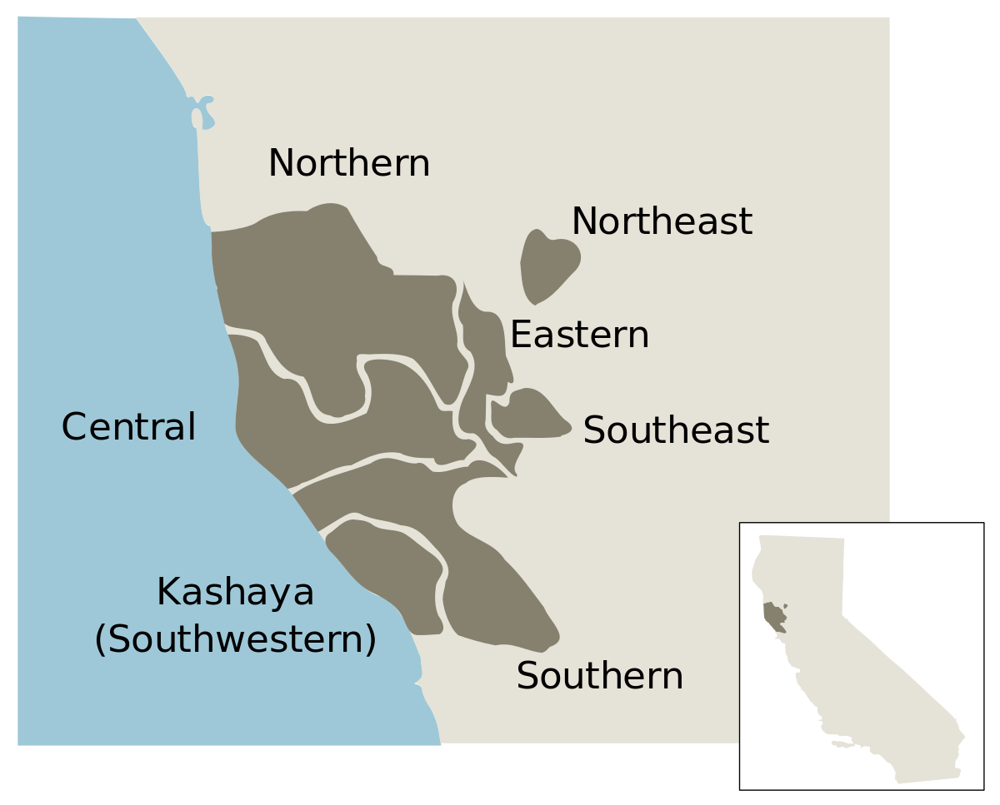
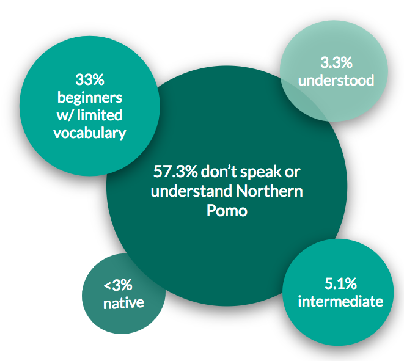
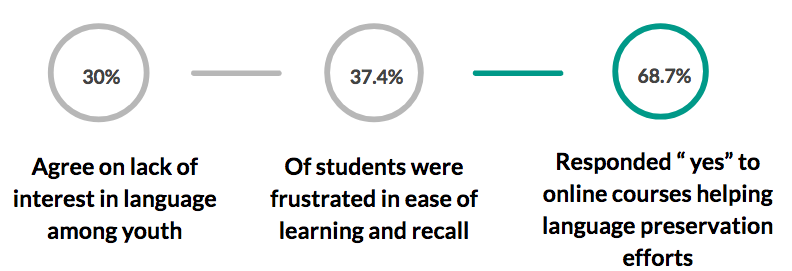

Northern Pomo is an extinct American Indian language that developed as early as 7000 BCE by tribes migrating along the Pacific Coast of Northern California. It belongs to the Western Branch of the Pomoan language family which was identified in 1908 as containing seven languages based on geographic distribution, with Northern Pomo based in Mendocino County, California. The seven Pomoan languages are Northern, Northeastern, Eastern, Central, Southern, Southeastern, and Southwestern Pomo (Kashaya). From a lexical comparison of 180 words across the seven languages, Central and Northern Pomo have the greatest degree of similarity and are most typical of the Pomo language (Barrett 1902:97).
Pomo society is composed of hundreds of independent groups connected by marriage, geography, and lineage. Their traditions include jewelry making, basket weaving and other records of myths and tales, and their religion is shamanism with the personification of healer spirits.
The factors of language endangerment in addition to large-scale cultural suppression were due to European conquest and colonization and U.S. government policy beginning in the 1800s. In the early 1800s, the Pomo contracted smallpox and measles from trading with Russians. Through the 1830s and 1840s, Californian Mexicans coerced the Pomo people into slavery. In the 1850s, U.S. government relocated the Pomo people to reservations in areas like Round Valley and Mendocino (Barrett 1902:50). When these reservations became discontinued in the late 1800s, the Pomo people found limited labor opportunities on ranches and in the fields. In 1878, members of the Northern Pomo community purchased their first piece of land in Coyote Valley, and since then, have attempted to rebuild their traditions and culture by securing the land on which they work.
From the 1980s to 2005, linguist Catherine O'Connor wrote her dissertation on Northern Pomo grammar and documented the language extensively; the audio recordings on this website are those collected from her fieldwork and can be downloaded from Northern Pomo Language Tools under QR Codes. In addition, other online learning resources include Omniglot and Northern Pomo Language Tools, the latter being the parent project to which this website extends.
As for motivations on language revitalization, the Pomo Language Status Report reveals community attitudes toward the language status and what resources are more effective for language learning. This 2011 report was conducted with Pomo tribal members by the California Indian Museum & Cultural Center.
 The most important online and website components are audio lessons, pronunciation guide, storytelling & video lessons, and common Q&A.
Here are some online resources I referenced to gather information on Northern Pomo: